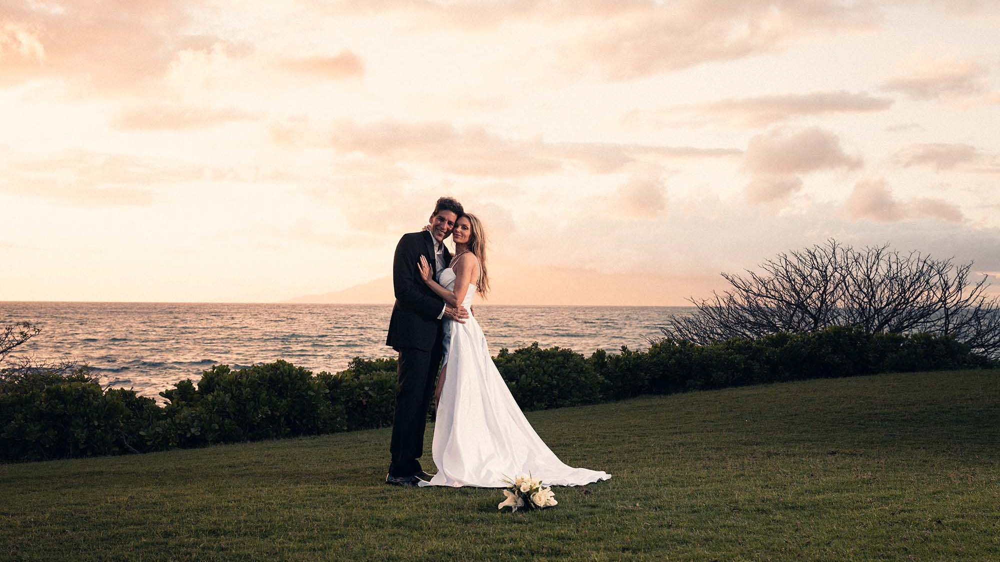
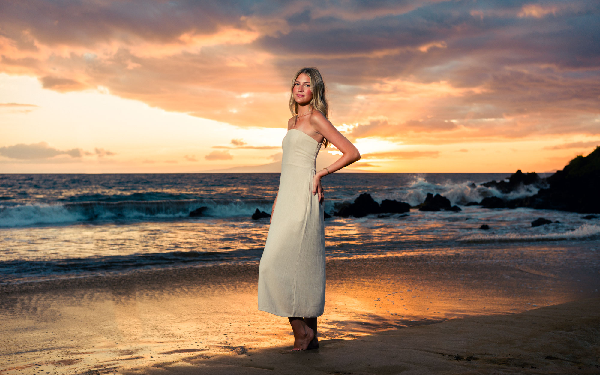
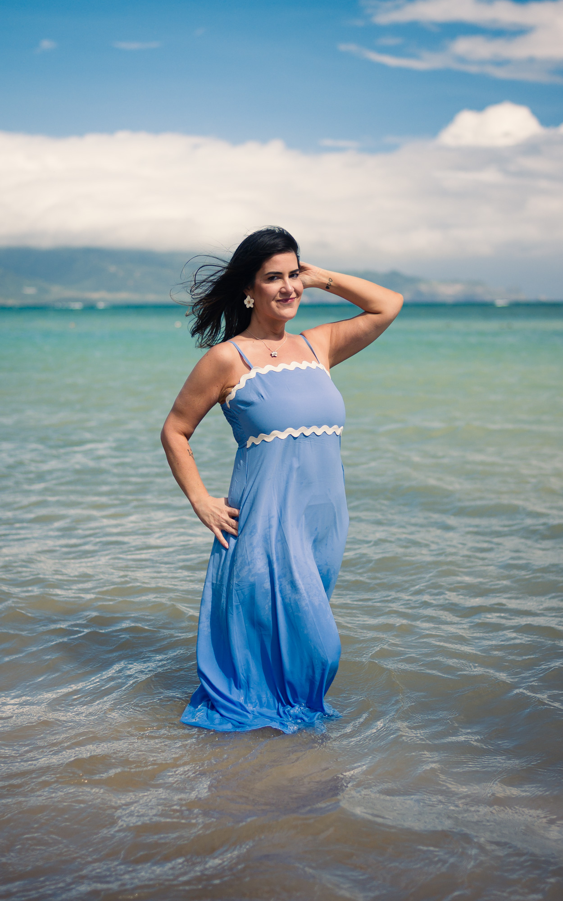
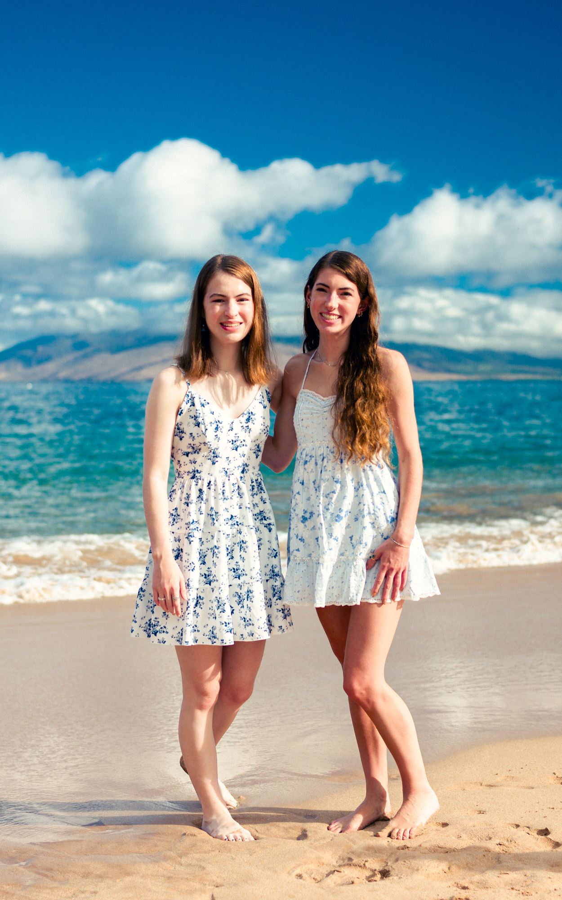

The Light Table Editions
Photographs made on Laurence’s Leica M9 and individually finished to evoke the clarity, density and emotional presence of a color transparency illuminated from within. The first edition is The Sixty-Four.
Digital capture · Individual colour finishing · No film processing
If you are under forty-five, you may know Kodachrome as a famous name — or perhaps from the Paul Simon song — but you probably did not grow up with the slides themselves. For much of the twentieth century, it was how the world remembered itself in color.
The Sixty-Four — $20. Fifteen individually finished frames, delivered as their own gallery alongside your complete session.
Add to My Session See the ColourThe film was invented by a pianist and a violinist.
Leopold Mannes and Leopold Godowsky Jr. were working concert musicians who spent their spare hours chasing color photography. Kodak eventually gave them a laboratory. In 1935, the two Leos introduced the first commercially successful amateur color film.
Soon it was inside family cameras, magazine assignments, home movies, travel bags and slide projectors. It photographed birthdays and road trips, distant countries and ordinary backyards. It helped transform the past from something we imagine in black and white into a world that suddenly feels close enough to touch.
And then there was the ritual. A slide was held to a window, placed on a light table, or projected across a darkened living room. Reds gained weight. Blues seemed to contain distance. Shadows remained mysterious. Because the image was illuminated from behind, it did not feel printed on a surface. It felt as though the light had been captured inside it.
Kodachrome became famous for rich color, exceptional sharpness and remarkable longevity. Its name became shorthand for a particular way of remembering: vivid, precise and almost impossibly alive.

Kodak ended Kodachrome and built this sensor in the same year.
In June of 2009, Kodak discontinued the last Kodachrome emulsion. Three months later they shipped a custom CCD sensor to Leica in Germany, made to order for a rangefinder called the M9. Same company. Same year. One hand closing the book, the other quietly writing an epilogue.
That sensor is the one in Laurence's camera. It has no anti-aliasing filter, which gives the files an unusual directness. Highlights need careful exposure and shadows stay deep — much the way transparency film behaved. It has also been out of production for years and cannot be replaced.
He did not choose it to be sentimental. He chose it because its directness, deep shadows and treatment of skin, water and late light made it the most compelling starting point we had found for this work.
Warmer skin. Deeper blacks. Greens that stay quiet.
The goal is not to copy a discontinued film stock or force every photograph into the same nostalgic costume. It is to recover the experience: warm and believable skin, dense color, restrained greens, luminous highlights and shadows that still carry mystery.
Every selected frame is worked individually. The profile establishes the color character; the finishing responds to the people, the exposure and the particular light on the beach. Where historical accuracy and beauty disagree, beauty wins — and we say so honestly.
Fifteen frames, hand-processed, delivered as their own gallery alongside your full set on the same timeline — so you keep everything, and get these as well. Settled with your final balance at the end of the session.
Limited availability: Laurence is the only one of us who shoots the M9, so it depends on who is covering your date. We confirm before your session, and you are only charged if we make them.
To be clear: no film is exposed. These are digital frames from the M9, processed by hand. If you are curious how that actually stacks up against real film, we ran the side-by-side — see Leica M9 vs. Kodak Portra 160.
One camera. More than one memory of color.
The Sixty-Four is the edition currently offered with select sessions — the color work below is drawn from that same ongoing collection.


Simple, and entirely optional.
The Sixty-Four is an add-on to the session you already booked. Nothing about your shoot changes and nothing is held back from your standard gallery. Below, until our own short film is finished, is one we love — Steve McCurry shooting the last roll.
Ask when you book
Family, couples, elopement, sunrise — any session. Tell us when you book, or mention it to us on the beach.
We confirm availability
Laurence is the only one of us who shoots the M9, so it depends on who is covering your date. We will let you know before your session.
Two galleries
Your full set delivered as always, plus fifteen hand-processed frames in a gallery of their own, on the same timeline.
Let's make something beautiful.
View Sessions & PricingKodachrome is a trademark of Eastman Kodak Company and is referenced here only as part of photographic history. The Light Table Editions and The Sixty-Four are Wailea Photo offerings and are not affiliated with, sponsored by, or endorsed by Kodak or Leica. Our photographs are captured digitally on a Leica M9; no film is exposed or developed.